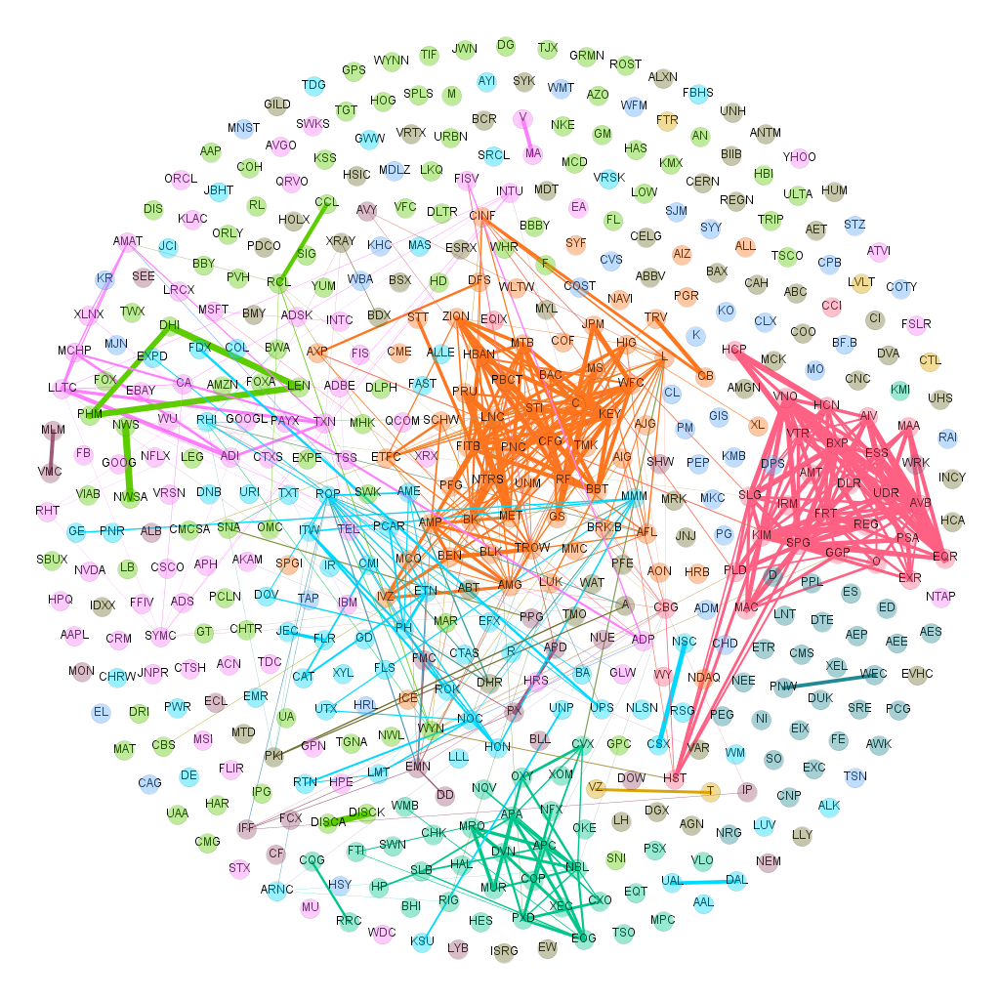

US-Stock-Market-Analysis
Overview:
This study offers an in-depth network analysis of S&P 500 stocks from 2018 to 2022, specifically examining stock connectivity and its evolution during significant events such as the COVID-19 pandemic. The methodology encompasses multi-step procedures involving data collection, detrending, calculation of correlation matrices, and network construction utilizing the Winner-Take-All (WTA) method as detailed in the referenced paper. Leveraging this approach, the project successfully visualizes stock market dynamics, identifying key properties and community structures within the network.
Methodology:
-
Data Collection: We scraped the S&P 500 company list from the Wikipedia page, ensuring comprehensive coverage. Followed by this we utilized Yahoo Finance API to gather historical price data for S&P 500 stocks from January 2018 to December 2022.
-
Data Detrending: Then, we calculated log price returns to normalize and prepare the stock price data for network analysis.
-
Computing Correlation Matrices: Followed by that, we computed Pearson correlations between stocks’ log returns across multiple windows to capture dynamic network properties.
-
Network Construction and Analysis: Lastly, we calculated modularity to determine the edge list threshold for graph creation and utilized NetworkX library to construct the graph and applied the Louvain algorithm to identify community structures.
Parameters Analysed:
Firstly, we observed scale-free features in most windows through log-log scale and histogram of the degree distribution. Additionally, we examined the fluctuating nature of the typical degree over time, marking significant events like the onset of the COVID-19 pandemic. We also identified influential stocks based on high-degree and betweenness centrality, often led by financial equities. Moreover, we observed dynamic formation and dissolution of stock communities over time, reflecting market dynamism. Last but not the least, we analyzed Jaccard similarity coefficients of communities against SIC codes, showcasing correlations among different industry sectors.
Impact and Insights:
- Visualizing stock connectivity evolution facilitated a nuanced understanding of market dynamics and intricacies over time, especially during times of upheaval such as the COVID-19 pandemic.
- The analysis revealed high-connectivity stocks and their roles, shedding light on their significance in forecasting stock behavior.
- The analysis further identified correlations between detected communities and real-world industry sectors, offering insights into stock trading groups during diverse periods.
Future Implications:
- Potential applications for investors, policymakers, and researchers to leverage network dynamics for informed decision-making in financial markets.
- Insights garnered serve as a foundation for further research, enabling refinement of forecasting models and understanding market behavior during volatile periods.